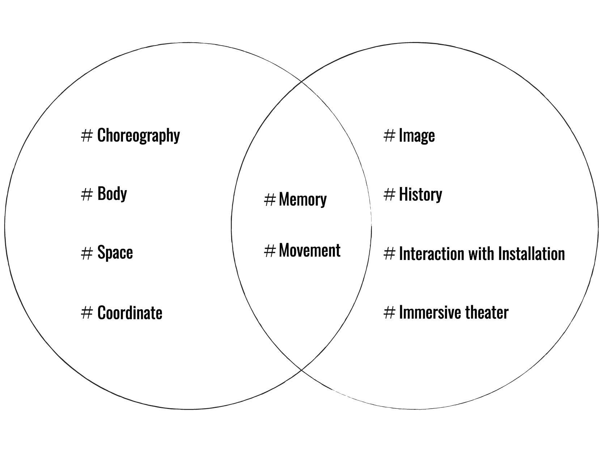

About
李明潔Ming-Chieh LEE與李欣穎Baï LEE 為一組編舞家與影像藝術家的雙人組。兩人透過田調移動，探尋自我生命遺憾與歷史場域之間的巧妙疊合，將其共創為“身體⇄影像”文本，以多元形式展演，視修補記憶傷口為初衷。
於2021年開始共創《轉，看看有沒有什麼好地方？》影像編舞概念展（2021）與《吐司機與夏日》（2022）分別獲第20屆與第21屆台新藝術獎提名。2023年成立明白實驗所，以《淼淼之路》自主策展兼展演篇章劇場空間小說式作品，實驗台灣當代藝術跨領域展演的可能性、開啟微型策展的嶄新視野，獲得2023年台北藝穗節特別獎。
Our Creative Philosophy: “Memory” & “Movement”
 Ming Baï Lab